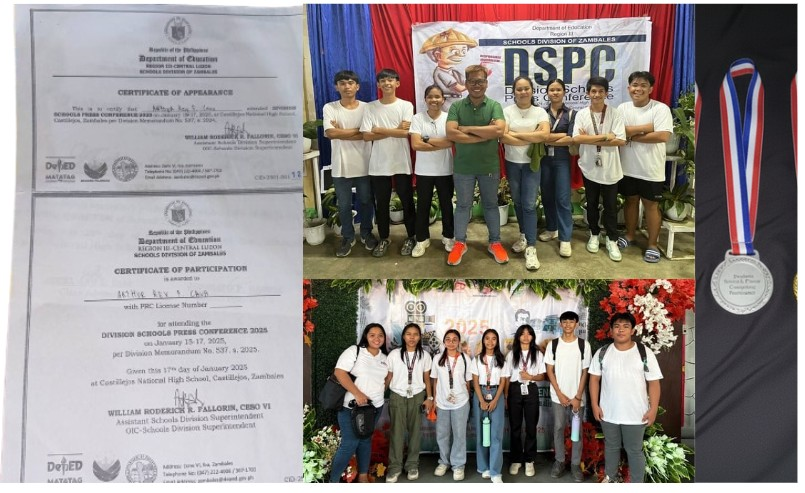

MyPortfolio
Achievements
 Senior High School Graduate(2025):
Senior High School Graduate(2025):Proudly graduated with 6 Sparkling medals across academics, co-curricular, and sports! Highlights include Graduating Medals, Outstanding Performance in Communication Arts (Filipino), Outstanding Performance in TVL ICT, 4th Place in MFOT Sineliksik, Zonal Meet Qualifier in Billiards, and DSPC Qualifier. A journey of dedication and excellence!
 Work Immersion(2025):
Work Immersion(2025):Earned a Certification of Completion for my Work Immersion at the Municipal Government of San Felipe, Zambales — diving into real-world experience and learning the ropes of public service firsthand.

DSPC Qualifier (2024&2025):
Division Press Conference Qualifier for two consecutive years (2024 and 2025)! Improving my Layout and designing skills while competing at a high level, year after year.
Division Press Conference Qualifier for two consecutive years (2024 and 2025)! Improving my Layout and designing skills while competing at a high level, year after year.
With Honors:
Graduated High School and Senior High School with Honors and Perfect Attendance — a testament to commitment, perseverance, and a love for learning.
Graduated High School and Senior High School with Honors and Perfect Attendance — a testament to commitment, perseverance, and a love for learning.
 Mother: Aurora Cava
Mother: Aurora Cava Father: Bernie Cava
Father: Bernie Cava Siblings: Renz Cava, Reggie Cava, Ronnie Cava
Siblings: Renz Cava, Reggie Cava, Ronnie Cava